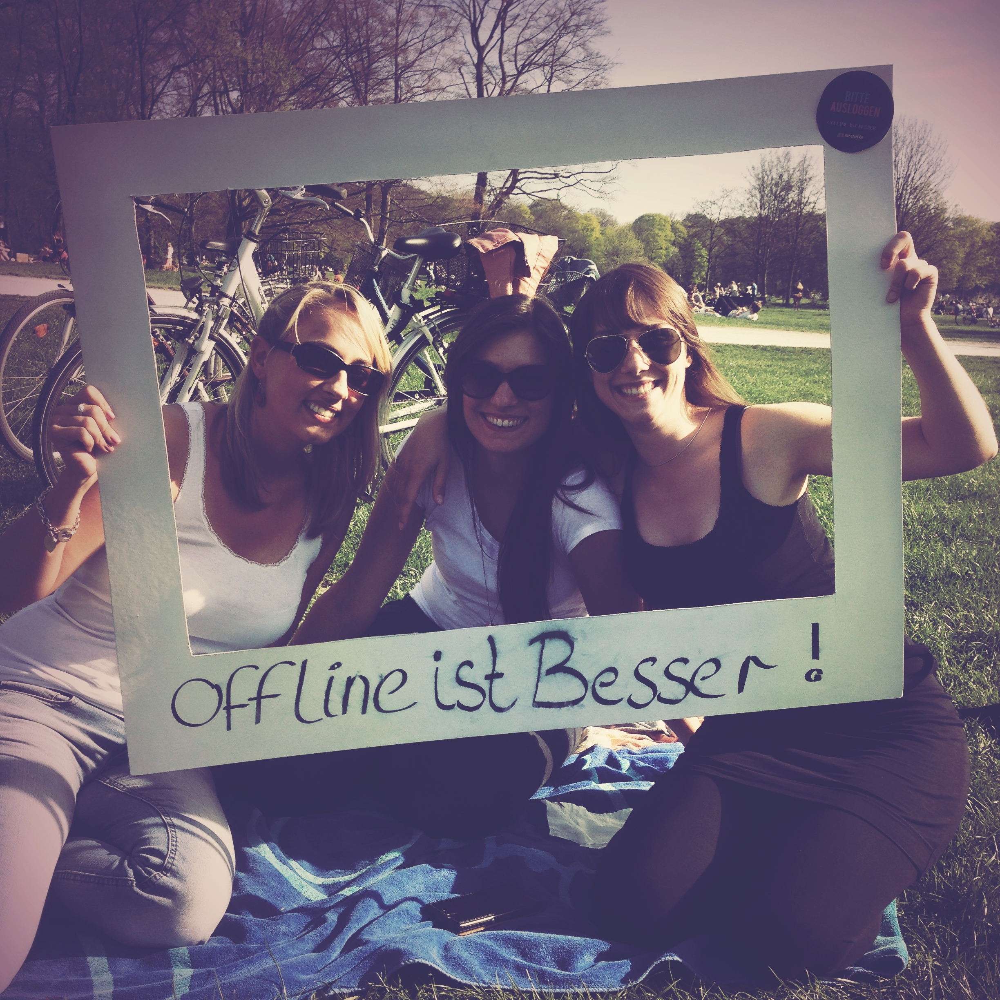

Don’t stay inside your office or die
People often say you need to be close to your market and really understand your customer. It’s true… otherwise you are going to die. While building Mixtable we had our ups and downs and want to share how to create a good environment to observe or engage with your customer and to distribute customer insights within the whole team.
Many entrepreneurs have written about human centric design and how to listen to customers (or not!). Steve Blank and Eric Ries definitely are great resources and we recommend to any new entrepreneur, e.g. consider reading: Killing your startup by listening to customers or When not to listen to your users
Getting in contact with customers
Build an MVP. Done! Test it with customers. Ok, but how?! One challenge for us was how to find the right atmosphere to observe or listen to your customer. After trying some easy wins, like talking to friends, we figured that we needed to be more creative and found some options to really get in contact with our users for qualitative feedback.
1. Call your first 1,000 customers. - Yes, it sounds simple and the first question we asked ourselves was „Will this piss off my first customers?“ If you do it in a clever way the answer is most likely no. In the signup process we asked users for their phone number, which was a compulsory field – forget about conversion optimization here. A high percentage (80%) of phone numbers were actually legit and so we started calling customers one or two days after sign-up and simply said „Hi, welcome to Mixtable! We are really happy to have you on board and would like to answer any questions you might have…“. Some people were not in the right mood to talk to us, but the majority even felt flattered and were super helpful. We for instant learned how hard it was for them to find two wing(wo)men to join the Mixtable on any given date.
This approach isn’t scalable but in our opinion totally worth it for your first 1,000 signups.
2. Host a party - Offer people the chance to meet you and have a good time. For us this was (somewhat) easy because Mixtable is all about meeting new people. But also for B-2-B startups, we believe there are options to host an event to create an environment to forge partnerships. Then you will get the chance to listen to users when they are more likely to tell you the truth - in vino veritas. Remember, it is important to brief the whole team to be curious and listen as much as possible to the event attendees and organize a structured debrief the day after the party to share the insights within the team.
Tip: Ask some booze companies to sponsor drinks! We were lucky and met the Brand Manager of LILLET in Munich who was very supportive and interested in introducing his product to our Mixtablers.
3. Go Offline - To get social media content for Mixtable we created our “Offline is better” campaign. The goal was to approach people asking them if they want to support our campaign, take a picture in front of our Mixtable wall or with our "Offline is better“ picture frames and help us spread the message. We hooked some people with the idea and generated curiousity about Mixtable and had the change to talk to many many people about our ideas and their needs.

Tip: By offering some cool giveaways, we gave away some kickass Mixtable sunglasses, it makes it easier to break the ice. Be aware that you won’t find love all the time by asking strangers to support you.
4. Be your own customer - Ok, that sounds obvious but really, become a power user of your product yourself and consider even paying for the service to understand what your users truly experience!
Most importantly, don’t forget to involve the whole team, spread the knowledge and to document the key customer insights for future team members. Even at Mixtable we experienced communication problems, and we were a team of six. Simply try having a Google Docs in the beginning or set-up a small Wiki for the team. Also keeping a wall in the office with the key insights can be helpful…
So please, get creative and don’t just ask your friends and family or troll the streets in front of your office and stalk poor pedestrians.